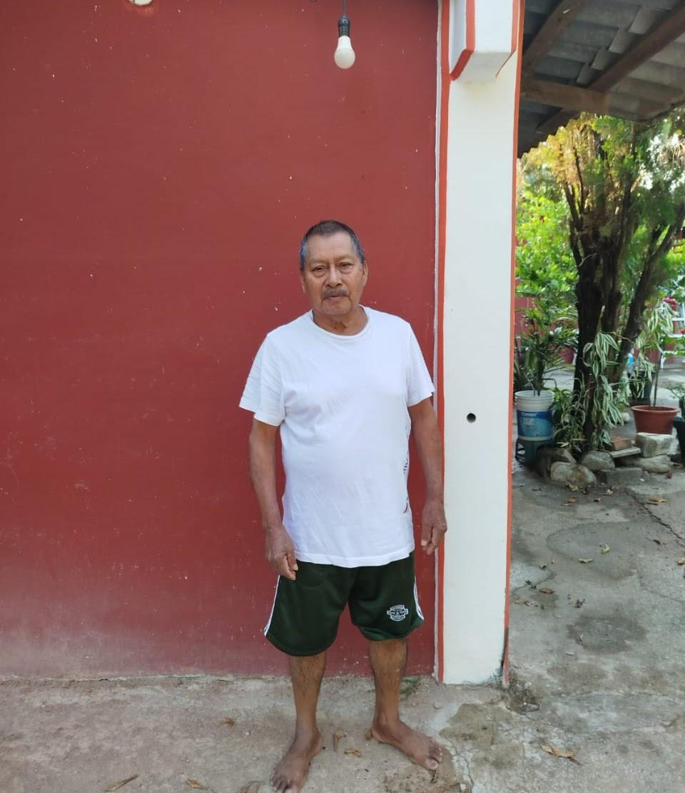

C. Urbano Olivera Peláez
Agente Municipal, en el periodo que abarca del año 2021 a 2022

C. Juan Morales Merino
Agente Municipal, en el periodo que abarca del año 2022 a 2023

C. Eulogio Ruiz Soria
Agente Municipal, en el periodo que abarca del año 2023 a 2024

C. Fermín Hernández Carro
Agente Municipal, en el periodo que abarca del año 2024 a 2025

C. Andrés Chávez Torres
Actual Agente Municipal, en el periodo que abarca del año 2025 a 2026